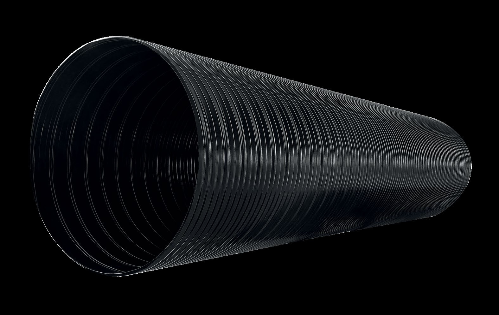
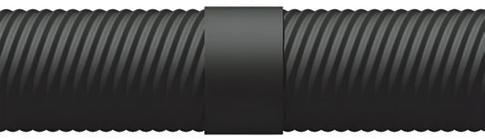

A firm bond with steel.
High-frequency induction heating bonds the functional multilayer film to the steel.

0RS · 1RS · 3RS / NPE-coated · SL smooth-interior steel pipe
From Daehan Steel Pipe’s NPE coatings to Shinhan Steel Pipe’s SL smooth-interior pipe. Explore profiles, coatings and connections together.
Select the corrugation for the intended use and design conditions. Profile type, coating and smooth-interior configuration are separate selections.

| Corrugation | Pitch P | Depth H |
|---|---|---|
| 0RS | 38.0 mm | 6.5 mm |
| 1RS | 68.0 mm | 13.0 mm |
| 3RS | 76.2 mm | 25.4 mm |
From small-diameter drainage and collection pipes to road-crossing culverts, assess diameter, cover, loading and hydraulic conditions.
Typical corrugation dimensions for standard pipe. Consult each manufacturer’s catalogue for available diameters, thicknesses and smooth-interior configurations.
Functional multilayer film bonded to steel —
Daehan Steel Pipe’s high-adhesion coating technology.

High-frequency induction heating bonds the functional multilayer film to the steel.
Choose the product for the service environment, considering coating resistance to corrosion, chemicals and abrasion.
High-adhesion functional film is used with repairability of damaged coating in mind.
Consider internal flow and surrounding soil together,
then select internal or double-sided coating.
Functional coating on the pipe’s inner surface.


Functional coating on both the inside and outside surfaces.

Daehan Steel Pipe’s catalogue describes the NEP certification history of coated corrugated steel pipe using a high-adhesion functional film designed for easier repair of damaged coating.
SL smooth-interior corrugated pipe combines an outer corrugated steel wall with an inner smooth steel liner.

The corrugated outer wall carries structural loads while the smooth interior supports flow. Shinhan’s SL (Sealed Lock-Seam) incorporates sealing material at the lock seam in combination with the coating layer.
Review both the pipe-body lock-seam seal and the gasket and tightening conditions at field joints.


Catalogue test results apply to the stated specimens and conditions. Confirm the model and project design conditions separately.
Select couplings to suit corrugation, diameter, re-corrugated ends and watertightness requirements.

A gasket is placed around the re-corrugated pipe ends, and the band is tightened with bolts.

Pipe-end flanges are assembled and fastened with the central connector and sealing rubber.
The catalogue also describes inserting a sleeve into the pipe ends and finishing with heat-shrink tape.
Confirm diameter, length, corrugation, coating configuration and couplings together.
Sources: Daehan Steel Pipe catalogue pp.6–15, Shinhan Steel Pipe catalogue pp.6–13 and Daehan’s NPE product introduction. Certification history is distinct from current validity.
Contact us about products, design and construction support.